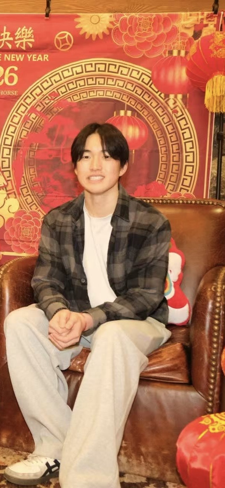

About Project Second Voice
We’re a youth-led digital storytelling platform documenting immigrant experiences and building a lasting archive.
Our mission
Why we tell these stories
Public conversations about immigration often focus on policies and numbers. Personal stories bring individual experiences into view and build understanding across communities.
Young people lead the work. We listen closely, document experiences with care, and use digital media to make those stories accessible.
Founder
Jonathan Wang
My name is Jonathan Wang, and I am an 11th grader at Del Norte High School and the founder of Project Second Voice. As the child of first-generation Chinese immigrants, I created this platform out of a desire to preserve stories that deserve more care, attention, and humanity.
I was especially inspired to take initiative after the Los Angeles raids that occurred last summer, and by the responsibility I felt living in a community shaped by many diverse immigrant cultures. Project Second Voice reflects that urgency alongside the love I have for my own Chinese culture.
The founder vision behind the platform is simple: immigrant experiences should be documented with dignity, shared with intention, and remembered as fully human stories.
